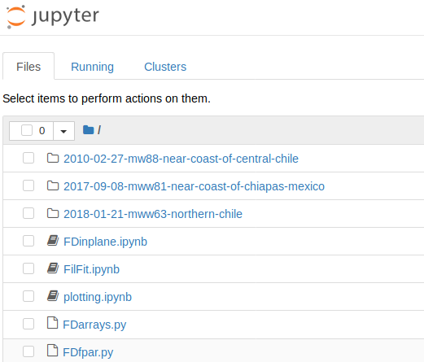

In your browser, navigate to:
https://mybinder.org/v2/gh/stefanazzz/JupyTest/master
This can take some time, but eventually you should see this appear:
Click on FilFit.ipynb. You should see the Jupyter notebook interface appear, like this:
Run each cell one by one using . Answer the queries as they appear. Feel free to modify the contents of the cells to see the result. This will modify only your personal "current" live version of the code, but the original code will not be affected. If you wish to preserve your edits or your graphics, you will need to download the whole notebook, or the individual graphics.
You can run interactively the other notebooks (ending in .ipynb) which appear in the list of items.